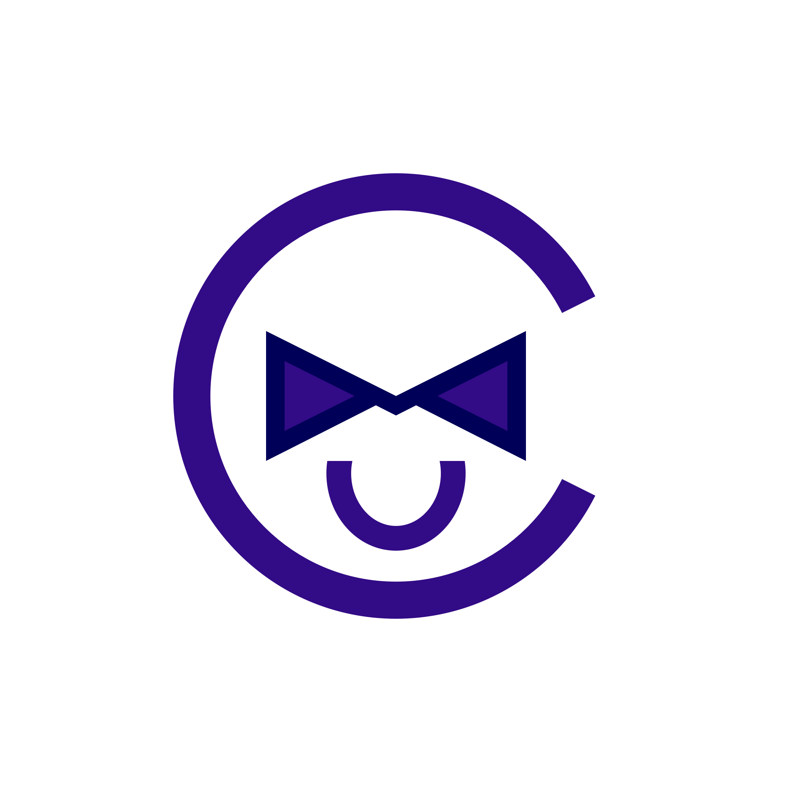
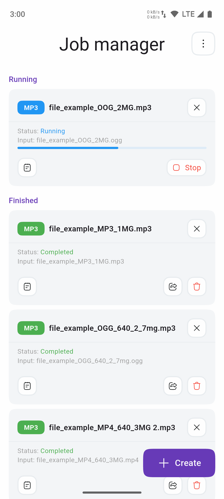
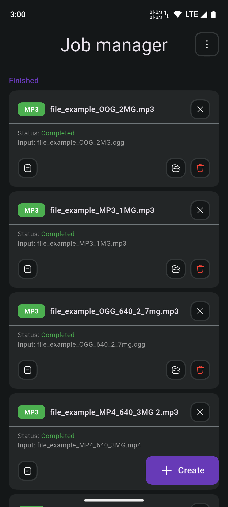
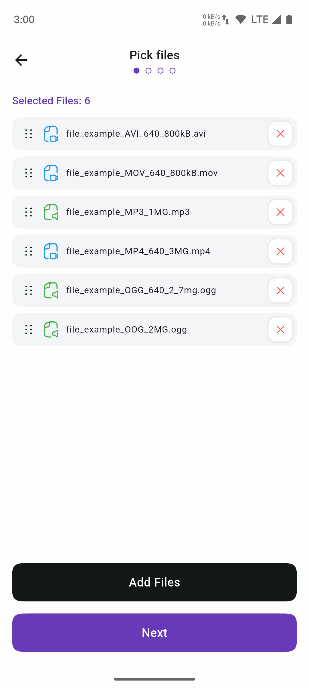
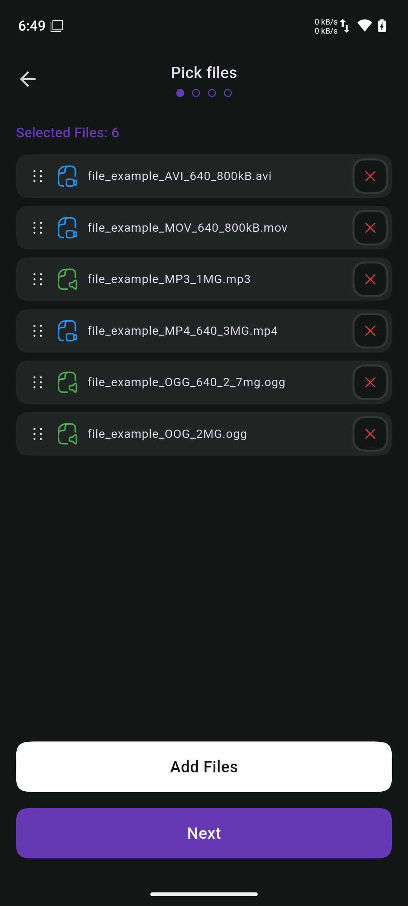
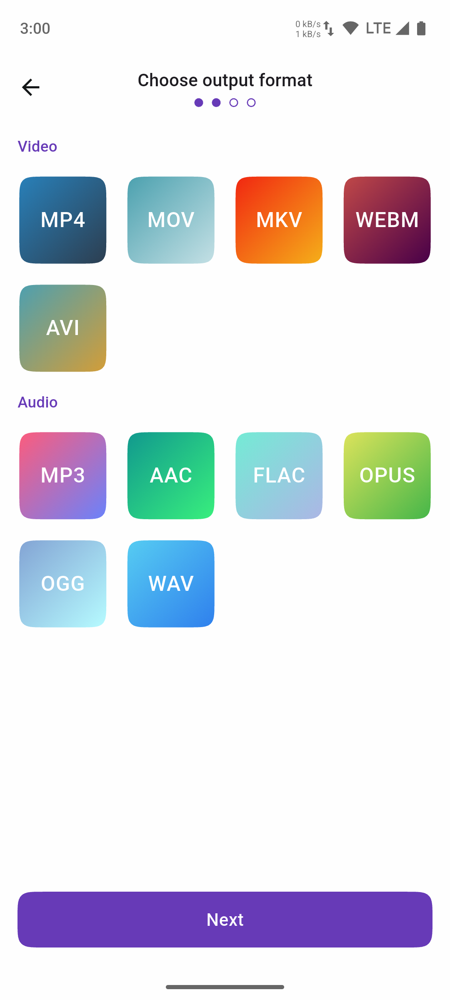
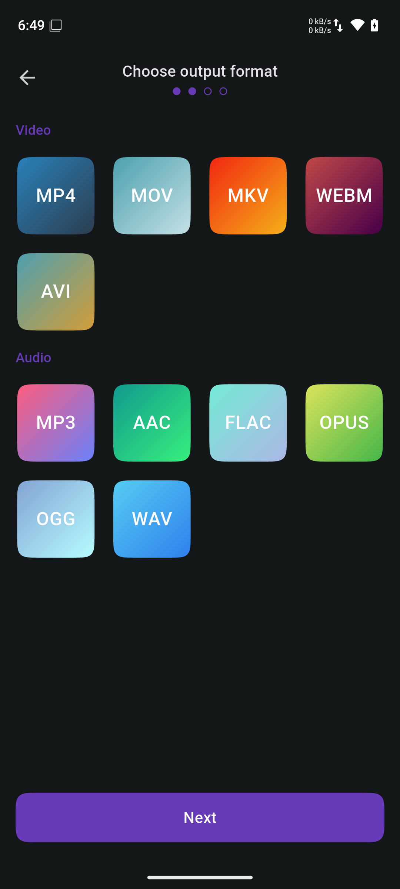
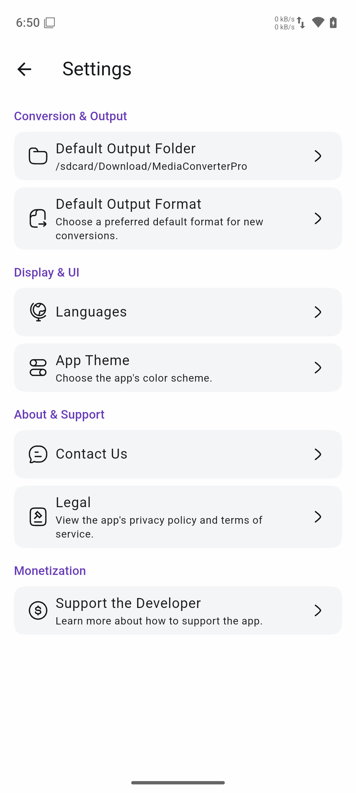
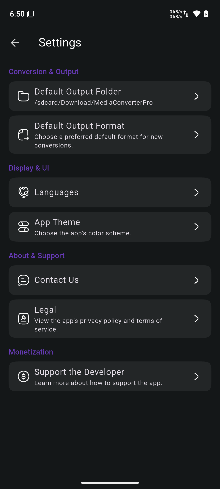

Media Converter Pro: Ultimate
Your ultimate solution for all media conversion needs, right on your device. Fast, private, and fully offline.
Features That Matter
Blazing Fast
Conversions happen instantly on your device, leveraging its full power without delays.
Absolute Privacy
Your files never leave your device. All processing is 100% offline, guaranteed.
Fully Offline
No internet connection? No problem. Use the app anytime, anywhere.
Simple Interface
A clean and intuitive design makes converting your media a breeze for everyone.
Wide Format Support
Convert between all major video, audio, and image formats with ease.
High Quality Output
Maintain the original quality of your media while converting to a new format.
A Glimpse Inside


Manage Your Conversions


Start a New Conversion


Many Output Formats


Configure Your App